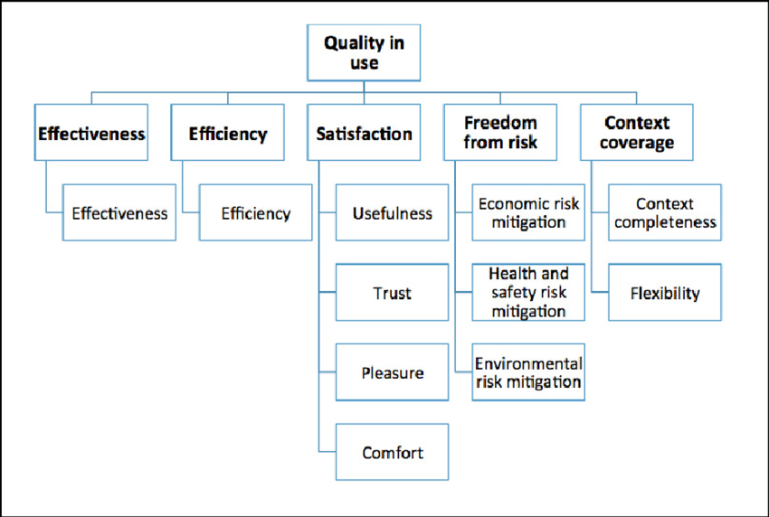
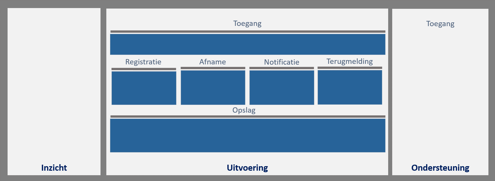

Creative Commons Attribution 4.0 International Public License (CC-BY)
Samenvatting
Doelstelling
Deze "Architectuurbeschrijving voorzieningen" van de Samenhangende Objectenregistratie is een beschrijving van de afbakening, ICT-inrichtingsprincipes, componenten en verbindingen van de voorzieningen van de objectenregistratie. Het doel van deze beschrijving is dat doorontwikkeling van ICT-voorzieningen in samenhang kan plaatsvinden naar een duidelijke doelsituatie.
Aanpak
Deze architectuurbeschrijving is stapsgewijs gemaakt en beter gemaakt met hulp van veel waardevolle suggesties door een grote groep meedenkers. Daartoe wordt het document op een transparante manier gedeeld. Meekijken mag, bijdragen van suggesties en commentaar kan door het aanmaken van zogeheten issues op https://github.com/Geonovum/disgeo-arch/issues.
Inhoud
De architectuurbeschrijving bevat een inleiding, een afbakening, gehanteerde principes, een inrichting en een uitwerking van de componenten. De beschrijving blijft op functioneel niveau, ofwel op het niveau van de applicatielaag van het NORA-vijflaagsmodel. De onderscheiden functies (capabilities, "wat moet kunnen") binnen het systeem worden zodanig beschreven dat een opdracht om deze in te vullen inhoudelijk voldoende duidelijk is voor opdrachtgever en opdrachtnemer om afspraken daarover te maken.
Status van dit document
Deze paragraaf beschrijft de status van dit document ten tijde van publicatie. Het is mogelijk dat er actuelere versies van dit document bestaan. Een lijst van Geonovum publicaties en de laatste gepubliceerde versie van dit document zijn te vinden op https://www.geonovum.nl/geo-standaarden/alle-standaarden.
Dit is een definitief concept van de nieuwe versie van de algemeen. Wijzigingen naar aanleiding van consultaties zijn doorgevoerd.
Versiebeheer
Dit document is aan verandering onderhevig. Het versiebeheer van het document geeft inzicht in de wijzigingen en de actualiteit van.
Versie
Datum
Status
Bewerking
Toelichting
0.5
31-aug-2020
Concept
Initieel document
Gereed gemaakt voor publicatie eerste reviewversie
0.8
15-nov-2020
Review
Uitwerking toegevoegd
Gereed gemaakt voor publicatie tweede reviewversie
0.85
03-dec-2020
Consultatie
Reviewcommentaar verwerkt
Reviewcommentaar door expertgroep verwerkt
0.90
16-02-2021
Versie ter vaststelling
Ontvangen feedback verwerkt
Ontvangen feedback uit consultatie verwerkt en meer dan 100 (soms uitgebreide) github issues beantwoord
1.0
09-03-2021
Definitieve versie
Finale redactie
Vastgesteld door kernteam samenhangende objectenregistratie
1. Inleiding
Het stelsel van basisregistraties is in Nederland een belangrijke grondlegger voor de informatiehuishouding van de (digitale) overheid. Binnen dit stelsel is een belangrijke plek weggelegd voor de geo-basisregistraties, die gegevens bevatten met een locatiecomponent. Meer samenhang tussen deze registraties is gewenst om efficiënte inwinning en bijhouding en integraal gebruik mogelijk te maken. Om een integrale doorontwikkeling mogelijk te maken is het Ministerie van BZK de Doorontwikkeling in Samenhang van de geo(basis)registraties (DiS Geo) gestart. Een belangrijke eerste stap daarbinnen is de totstandbrenging van een samenhangende objectenregistratie.
Een samenhangende objectenregistratie is een uniforme registratie met daarin basisgegevens over objecten in de fysieke werkelijkheid die zich voor gebruikers als één registratie gedraagt. Daaronder verstaan we objecten die in het terrein zichtbaar zijn, zoals gebouwen, wegen, water, spoorlijnen en bomen, terreindelen, aangevuld met enkele (administratieve) objecten als woonplaatsen, gemeentegrenzen en openbare ruimten. De samenhangende objectenregistratie gedraagt zich als een geheel waar bronhouders gegevens ‘in stoppen’ en afnemers gegevens ‘uit halen’.
Dit document is de Architectuurbeschrijving Voorzieningen van de Samenhangende Objectenregistratie. Het beschrijft de afbakening, de inrichtingsprincipes en de conceptuele of functionele inrichting (de functionele onderdelen en samenhang) van de ICT-componenten voor de Samenhangende Objectenregistratie. Met andere woorden, de Architectuurbeschrijving Voorzieningen beschrijft de Objectenregistratie op de Applicatielaag, laag 4 in het NORA-vijflaagsmodel
De scope van de architectuur omvat de gemeenschappelijke voorzieningen voor het registreren, bewaren en ontsluiten van de objectgegevens in de objectenregistratie. Voorzieningen die bronhouders gebruiken voor het inwinnen van objectgegevens (zoals voor beeldmateriaal) vallen buiten de scope. Ook de voorzieningen van afnemers voor het gebruiken van de gegevens en voor het, indien nodig, lokaal opslaan van kopieën van de gegevens vallen buiten de scope.
Figuur 1Scope in het NORA 5 laagsmodel
1.1 Doel en doelgroep
Deze architectuurbeschrijving moet het mogelijk maken om keuzes te maken voor de verdere inrichting van de ICT-voorzieningen (componenten, applicaties of systemen) voor de Samenhangende Objectenregistratie. Ook moet de architectuurbeschrijving input het mogelijk maken om de transitiestrategie te bepalen voor de overgang van de huidige voorzieningen van o.a. de BAG, BGT en BRT naar de ICT-componenten voor de Objectenregistratie. Tot slot moet de architectuurbeschrijving input bieden voor de technische en organisatorische inrichting van de ICT-voorzieningen voor de Objectenregistratie. De onderscheiden functies binnen het systeem worden zodanig beschreven dat een opdracht om deze verder uit te werken inhoudelijk voldoende duidelijk is voor opdrachtgever en opdrachtnemer.
De architectuurbeschrijving geeft richting aan de nadere inrichting van de ICT-componenten voor de Objectenregistratie en is daarom met name bedoeld voor degenen die betrokken zijn bij die inrichting. Daarnaast is de Architectuurbeschrijving van belang voor de afstemming over de inrichting van de ICT-voorzieningen voor de Objectenregistratie met alle belanghebbenden: beleidsverantwoordelijke(n), bronhouders, verstrekker(s), afnemers, beheerders en (software-)leveranciers en andere belanghebbenden.
1.2 Leeswijzer
De Architectuurbeschrijving van de Samenhangende Objectenregistratie heeft de volgende opbouw:
Het hoofdstuk Afbakening beschrijft de grenzen van de Objectenregistratie en de interactie met de omgeving. De afbakening brengt in kaart welke soorten interactie bronhouders en afnemers hebben met de ICT-voorzieningen van de Objectenregistratie.
Het hoofdstuk Inrichtingsprincipes beschrijft de principes die bepalend zijn voor de functionele en indirect ook technische inrichting van de ICT-voorzieningen en de bijbehorende ICT-organisatie van de Objectenregistratie.
Het hoofdstuk Inrichting beschrijft de functionele inrichting van de ICT-voorzieningen van de Objectenregistratie op de applicatielaag van het NORA-vijflaagsmodel.
Het hoofdstuk Uitwerking werkt de ICT-onderdelen van de Objectenregistratie verder uit, vormt het kader voor de technische inrichting en biedt input voor de organisatorische inrichting rond de ICT-voorzieningen.
Relevante bijlagen staan in het hoofdstuk Bijlagen
1.3 Context
Dit document is een product van een samenwerking van Geonovum, Kadaster, Ministerie van BZK en VNG Realisatie. Bij de totstandkoming zijn diverse belanghebbenden betrokken. Afstemming met een bredere groep belanghebbende organisaties is nodig, met name om de samenhang met het gehele stelsel van basisregistraties te borgen.
Deze Architectuurbeschrijving Voorzieningen van de Samenhangende Objectenregistratie vormt samen met andere documenten een volledige beschrijving van de samenhangende objectenregistratie, zoals hieronder weergegeven. Op het moment van schrijven zijn niet voor alle blokken al uitwerkingen openbaar.
Figuur 2Documenten van de samenhangende objectenregistratie
Globale uitgangspunten voor het programma DiS-Geo worden vastgelegd in een nog te verschijnen beleidsvisie DiS Geo.
De architectuurvisie van het programma DiS-Geo is beschreven in een houtskoolschets getiteld "Geodata als stroom uit het stopcontact".
Globale uitgangspunten voor het gegevensmodel, de voorziene processen voor inwinning, registratie en ontsluiting van gegevens, en eerste beelden over de organisatie en governance en financiering zijn vastgelegd in een beleidsvisie samenhangende objectenregistratie die eind 2019 door het BAG BAO en de Regieraad BGT is vastgesteld.
Sindsdien wordt er gewerkt aan een verdere invulling van een drietal onderwerpen, die samenvallen met drie van de vijf lagen uit het NORA-vijflaagsmodel:
Een uitwerking van de governance, organisatie en financiering van een samenhangende objectenregistratie, bestaande uit onder meer een beschrijving van taken en verantwoordelijkheden, de inrichting van de besluitvormingsstructuur, financieringsafspraken en een eerste opzet van ketenprocessen (organisatorische laag / laag 2 uit het NORA-vijflaagsmodel). Hiervan zijn op dit moment nog geen documenten beschikbaar.
Een uitwerking van de inhoud van een samenhangende objectenregistratie, bestaande uit onder meer inhoudelijke uitgangspunten, de invulling van een aantal generieke onderwerpen die van belang zijn voor de informatiemodellering en een conceptuele beschrijving van de begrippen (soorten objecten), de eigenschappen die daarvan worden vastgelegd en de waarden die deze eigenschappen kunnen aannemen (informatielaag / laag 3 uit het NORA-vijflaagsmodel). Er is een hoofdlijnenrapport verschenen en er zijn eisen aan het model.
Een uitwerking van de architectuurbeschrijving van de ICT-voorzieningen voor een samenhangende objectenregistratie, bestaande uit een afbakening van de systeembegrenzing, ICT-inrichtingsprincipes en een uitwerking van de functionele onderdelen van de ICT-voorzieningen en hun onderlinge samenhang (applicatielaag / laag 4 uit het NORA-vijflaagsmodel). Het document dat u nu leest is hiervan een versie.
2. Afbakening
Dit hoofdstuk beschrijft de afbakening en context van de ICT-voorzieningen voor de Objectenregistratie. Het doel hiervan is de grenzen van deze ICT-voorzieningen en de bijdragen ervan aan de omgeving te bepalen. De afbakening brengt in kaart welke soorten interactie bronhouders en afnemers hebben met de ICT-voorzieningen voor de Objectenregistratie.
2.1 Doel van de Objectenregistratie
Voor de Architectuurbeschrijving van de ICT-voorzieningen voor de Objectenregistratie is het goed het doel van de registratie te kennen. In de beleidsvisie voor de samenhangende objectenregistratie is een vijftal doelstellingen geformuleerd:
Een betrouwbare, consistente en actuele samenhangende gegevensset voor heel Nederland;
Een efficiëntere inwinning en bijhouding van objecten, ook in drie dimensies (3D);
Een betere inpassing in moderne architecturen;
Meer en eenvoudiger gebruik van deze informatie in maatschappelijke toepassingen. De registratie gedraagt zich voor de gebruiker als één registratie.
De objectenregistratie maakt onderdeel uit van een robuuste geo-informatie infrastructuur binnen de generieke digitale infrastructuur en voldoet aan de 12 eisen voor een basisregistratie
2.2 Context voor de Architectuurbeschrijving
Onderstaande afbeelding en tabel tonen de globale processtappen rond de Objectenregistratie.
Deze processtappen zijn afkomstig uit een eerste uitwerking van de organisatorische inrichting van de objectenregistratie. De namen van de processtappen en de omschrijving ervan in de tabel hieronder zijn afkomstig uit die uitwerking en hier zonder wijzigingen overgenomen. Deze uitwerking is op moment van schrijven niet openbaar beschikbaar.
Bronhouders zorgen voor het inwinnen van bronmateriaal zoals luchtfoto's of bouwwerkinformatiemodellen of maken gebruik van door anderen ingewonnen bronmateriaal. Op basis van dit bronmateriaal stelt de bronhouder objectgegevens samen die voldoen aan de eisen van de Objectenregistratie en registreert deze objectgegevens in de opslag van de Objectenregistratie waar ze worden bewaard. Vanuit de opslag worden gegevens ontsloten richting afnemers die deze gegevens gebruiken in hun (bedrijfs-)processen.
Objectgegevens kunnen worden verrijkt voordat ze worden ontsloten voor gebruik, bijvoorbeeld door gegevens te selecteren, filteren en combineren tot afgeleide gegevens. Het resultaat van verrijken noemen we afgeleide gegevens. Zowel gegevens(producten) als afgeleide gegevens(producten) van de objectenregistratie worden ontsloten via services.
Vanuit de Objectenregistratie worden alleen generieke gegevensproducten verstrekt. Dat zijn producten die voor een groot deel van de afnemers relevant zijn. Specifieke gegevensproducten waar alleen bepaalde sectoren of afnemers behoefte aan hebben vallen buiten de scope van de Objectenregistratie. Als er bij de afnemers twijfel over de juistheid van gegevens bestaat dan kunnen zij dat terugmelden waarna de bronhouder zal onderzoeken of die twijfel tot wijzigingen moet leiden.
Figuur 3De globale processtappen van de samenhangende objectenregistratie
Samenvattend onderscheiden we de volgende processtappen.
Processtap
Omschrijving
Inwinnen
Het door waarneming vanuit de werkelijkheid of uitvraag aan burgers en bedrijven vanuit werkprocessen beschikbaar maken van gegevens over objecten en/of eigenschappen daarvan in een gegevensbron.
Samenstellen
Het combineren van objectgegevens tot een samenhangende beschrijving conform hetgeen daarover is bepaald in inhoudelijke criteria en kwaliteitseisen aan de objectenregistratie.
Registreren
Het valideren en vastleggen van objectgegevens in de registratie.
Bewaren
Het duurzaam beschikbaar houden van de gegevens over objecten en/of eigenschappen daarvan in de registratie.
Ontsluiten
Het beschikbaar stellen van de in de registratie opgenomen gegevens op een zodanige wijze dat deze als gegevens eenvoudig door afnemers kunnen worden benaderd.
Verrijken
Het zodanig transformeren van in de registratie opgenomen gegevens dat een op afnemersbehoeften afgestemd gegevensproduct ontstaat.
Gebruiken
Het ophalen van de beschikbaar gestelde gegevens en de toepassing daarvan binnen de werkprocessen waarvoor de gegevens zijn benodigd.
Terugmelden
Het doorgeven van een mogelijk onjuist in de registratie opgenomen gegeven aan de bronhouder met daarbij een voldoende onderbouwing van de mogelijke onjuistheid om een onderzoek mogelijk te maken.
Onderzoeken
Het analyseren van een mogelijk onjuist gegeven in de registratie naar aanleiding van een terugmelding. Na het verzamelen van aanvullende gegevens kan het al dan niet nodig zijn gegevens in de registratie aan te passen.
NB. Deze namen en omschrijvingen zijn overgenomen uit een eerste uitwerking van de organisatorische inrichting van de objectenregistratie. Op het moment van schrijven is die uitwerking niet openbaar.
2.3 Scope van de Architectuurbeschrijving
Op basis van de processtappen is de scope van de Architectuurbeschrijving te bepalen. Onderstaande afbeelding geeft deze scope weer.
Figuur 4Scope van de architectuurbeschrijving.
Deze architectuurbeschrijving heeft als scope de ICT-voorzieningen voor de uitvoering en de ondersteuning van de Samenhangende Objectenregistratie. Dit betreft de processtappen Registreren, Bewaren, Ontsluiten en Verrijken en de bijbehorende ondersteunende processen. Alleen het verrijken van gegevens tot generieke gegevensproducten behoort tot de scope van (de ICT-voorzieningen voor) de Objectenregistratie.
De processtappen Inwinnen, Samenstellen, Onderzoeken bij de bronhouder en Gebruiken en Terugmelden bij de afnemer zijn buiten scope. Het is aan bronhouders en afnemers om hier zelf voorzieningen voor in te richten. Ook de primaire registraties die horen bij Inwinnen en Samenstellen en Onderzoeken, zoals registraties voor beeldmateriaal, zijn buiten scope.
Deze architectuurbeschrijving benoemt binnen de scope de functies, componenten en samenhang. Voor de processen van de rollen bronhouder en afnemer benoemt de architectuurbeschrijving alleen de processtappen. De benoeming van de ICT-componenten en de inrichting daarvan is aan de bronhouders en afnemers zelf en daarmee buiten de scope van deze architectuurbeschrijving
2.4 Interacties met de omgeving
De Objectenregistratie heeft de volgende interactie met de omgeving.
Figuur 5Interacties
Actor
Interacties
Bronhouder
Gegevens. De bronhouder registreert objectgegevens en houdt de gegevens conform gestelde eisen in overeenstemming met de werkelijkheid
Meldingen: De bronhouder verwerkt terugmeldingen van afnemers.
Catalogus. De bronhouder gebruikt de gegevens- en dienstencatalogus om kennis te nemen van de gegevensdefinities en diensten van de Objectenregistratie.
Inzicht. De bronhouder gebruikt inzicht in de gegevenskwaliteit ter ondersteuning van het beheren van objectgegevens.
Support. De bronhouder ontvangt ondersteuning bij het gebruik van de Objectenregistratie.
Hulpvraag. De bronhouder kan om ondersteuning vragen bij het gebruik van de Objectenregistratie.
Afnemer
Gegevens. De afnemer neemt objectgegevens en generieke gegevensproducten af.
Notificaties. De afnemer kan zich abonneren op notificaties betreffende bepaalde objectgegevens.
Meldingen. De afnemer levert terugmeldingen bij twijfel over de juistheid van objectgegevens.
Catalogus. De afnemer gebruikt de gegevens- en dienstencatalogus om kennis te nemen van de gegevensdefinities en diensten van de Objectenregistratie.
Inzicht. De afnemer gebruikt inzicht in de gegevenskwaliteit ter ondersteuning van het gebruiken van objectgegevens.
Support. De afnemer (mens of computer) ontvangt ondersteuning bij het gebruik van de Objectenregistratie.
Hulpvraag. De afnemer kan om ondersteuning vragen bij het gebruik van de Objectenregistratie. Hier wordt zowel geautomatiseerde ondersteuning als menselijke ondersteuning bedoeld.
De actor Bronhouder in de omgeving maakt gebruik van diensten van de Objectenregistratie om objectgegevens te registreren.
De actor Afnemer in de omgeving maakt gebruik van de diensten van de Objectenregistratie om objectgegevens af te nemen.
Bronhouders en afnemers maken gebruik van ondersteuners zoals dienstenleveranciers en softwareleveranciers en kunnen taken uitbesteden aan derden, zoals samenwerkingsverbanden en gegevensleveranciers.
De beschreven interacties hebben deels ook betrekking op deze ondersteuners. Zo zullen softwareleveranciers ook gebruik maken van de gegevens- en de dienstencatalogus van de Objectenregistratie.
3. Inrichtingsprincipes
Dit hoofdstuk beschrijft de principes die richtinggevend zijn voor de functionele inrichting van de ICT-voorzieningen voor de Objectenregistratie en de bijbehorende ICT-Beheerorganisatie.
3.1 Beleid Samenhangende Objectenregistratie
De overkoepelende Architectuurvisie DiS-Geo geeft de richtinggevende kaders waarbinnen de bestaande geo basisregistraties worden doorontwikkeld tot een samenhangende objectenregistratie.
We laten ons bij het ontwerp en de verdere uitwerking niet beperken door de nu bestaande juridische kaders (deze kunnen in principe worden aangepast, via een traject aanpassing wet- en regelgeving).
In het ontwerp van een samenhangende objectenregistratie is sprake van een nadrukkelijke scheiding tussen de vastlegging van gegevens en de functionaliteit voor het bewerken, opvragen en presenteren daarvan.
Er wordt gebruik gemaakt van standaard infrastructurele voorzieningen die beschikbaar zijn bij de bronhouders en de gebruikers (denk hierbij aan standaardnetwerken, netwerkprotocollen en beveiligingsmechanismen).
Er wordt in de eindsituatie zoveel mogelijk uitgegaan van ‘bevragen bij de bron’. Hierbij is van belang dat de gebruiker voor verstrekkingen zoveel mogelijk uit kan gaan van één loket. Een belangrijk aandachtspunt hierbij is het gebeurtenis georiënteerd werken (nader uit te werken). Of de bronhouders gedistribueerd en decentraal werken of direct inwinning en bijhouding in een (of meerdere) voorziening(en) uitvoeren via gestandaardiseerde services moet nader bepaald worden (nadere uitwerking in kader van DiS GEO/beleidsvisie: leveranciers, bronhouders, Kadaster, VNG-R, Ministerie van BZK).
Keuzen voor een technische inrichting van de registratie worden pas later in het traject gemaakt, zodat oplossingen gebaseerd zijn op recente inzichten in oplossingsmogelijkheden.
Vanuit andere (basis)registraties, zoals de subjectenregistraties BRP of HR, moeten eenvoudig relaties gelegd kunnen worden naar de samenhangende objectenregistratie.
De registratie gedraagt zich voor gebruikers zoveel mogelijk als één registratie, of het daadwerkelijk één registratie wordt, is nog niet bepaald (nader uit te werken). Daarnaast kunnen er uit de registratie (informatie)producten afgeleid worden en beschikbaar gesteld worden.
De kerngegevens en aanvullende gegevens worden in principe ontsloten als open data (waar nodig ontsloten op basis van autorisaties), dus het “open data, tenzij” regime geldt.
In principe kan de informatie via meerdere kanalen, afgestemd op gebruikersbehoefte, uitgeleverd worden (nadere uitwerking in kader van DiS GEO).
3.2 Inrichtingsprincipes vergelijkbare domeinen
Binnen andere domeinen is veel kennis en kunde opgebouwd over inrichtingsprincipes van dit soort ICT-voorzieningen. We hebben hier met name gebruik gemaakt van de volgende groepen met ervaring en vastgelegde kennis:
De referentie architectuur NORA van de architecten van samenwerkende Nederlandse overheden
Het GEMMA Gegevenslandschap en Common Ground van samenwerkende gemeenten en de Vereniging van Nederlandse Gemeenten.
Deze zijn van belang omdat ze breed gedragen zijn binnen de overheid en ook zijn opgenomen in de agenda digitale overheid NL DIGIbeter.
Overigens wordt van dienstenaanbieders verwacht dat ze invulling geven aan basisprincipes die staan genoemd in de NORA. Vanuit basisprincipes BP01 tot en met BP05: diensten zijn proactief vindbaar en toegankelijk, uniform en gebundeld voor afnemers. Vanuit basisprincipes BP09 en BP10: dienstenaanbieder is betrouwbaar en ontvankelijk voor input.
Verder stimuleert de overheid het beschikbaar stellen van de broncode van software in haar open source beleid
Voor de ICT-inrichting van de Samenhangende Objectenregistratie hanteren we de onderstaande principes. Met 'de oplossing' bedoelen we steeds de ICT-voorzieningen van de Samenhangende Objectenregistratie.
Inrichtingsprincipe 1: Gegevens worden gescheiden van applicaties bewaard, zodat opslag van gegevens onafhankelijk is van de gebruikte applicaties en gegevens te (her)gebruiken zijn in verschillende applicaties voor verschillende doeleinden.
Grondslag: Uitgangspunten (12, 14), GGL / Common Ground (04)
Inrichtingsprincipe 2: Ieder gegeven wordt op precies één plek bijgehouden, zodat altijd duidelijk is wat het actuele brongegeven is en waar dat wordt beheerd. Dit principe heeft de volgende onderliggende principes in zich:
Dubbele opslag betekent synchroniseren, zodat partijen altijd naar dezelfde gegevens kijken. Dit geldt zowel binnen als buiten de oplossing, dus ook voor eventuele afgeleide opslag die geoptimaliseerd is ten behoeve van verstrekking.
Grondslag: Uitgangspunten (14, 15, 19), GGL / Common Ground (04)
Inrichtingsprincipe 3: Gegevens zijn alleen te registreren, wijzigen en raadplegen via dataservices, zodat de registratieservices kunnen garanderen dat de gegevens en metagegevens altijd voldoen aan de eisen en dat logging altijd plaatsvindt. Om te garanderen dat de gegevens blijven voldoen aan de gestelde kwaliteit en actualiteit kunnen ze alleen benaderd worden via (data)services. Dit principe zorgt ervoor dat gegevens blijven voldoen aan de (integriteits-)eisen, doordat de dataservices dit waarborgen. Ook zorgt dit principe ervoor dat er een ontkoppeling is tussen de gegevens en de ontsluiting ervan. Applicaties benaderen de gegevens via de dataservices en niet direct. Dat maakt het mogelijk om veranderingen aan te brengen in de gegevensopslag of in de dataservices zonder dat deze elkaar beïnvloeden. Hierdoor kan flexibel omgegaan worden met aanpassingen in het gegevensmodel. Dit principe heeft de volgende onderliggende principes in zich:
Dataservices houden metagegevens actueel, zodat gegevens en metagegevens altijd onderling consistent zijn.
Dataservices borgen de gegevensregels, zodat gegarandeerd is dat de gegevens altijd voldoen aan de gegevensregels.
Dataservices leggen het creeren, wijzingen en raadplegen van gegevens vast in logging, zodat deze services ervoor kunnen zorgen dat aantoonbaar is wat door gemachtigde leveranciers onder verantwoordelijkheid van bronhouders plaatsvindt. Alle transacties op de gegevens worden gelogd. Dit is nodig om een audit-trail te kunnen opbouwen.
Inrichtingsprincipe 4: Gegevens worden op betrouwbare en veilige wijze beheerd, zodat aangetoond kan worden dat gegevens niet bedoeld of onbedoeld gemanipuleerd zijn. Om op gegevens te kunnen vertrouwen zorgen functies ervoor dat gegevens bij alle handelingen vanaf ontstaan tot gebruik veilig zijn. Gegevens wijzigen daarom alleen op basis van een brondocument of mutatieverwijzing en de wijziging zelf wordt gelogd. Hierbij wordt geen verschil gemaakt tussen alfanumierieke gegevens en geografische gegevens. Integriteit en consistentie van gegevens wordt bewaakt. Gegevens worden bewaard conform de eisen van de wet (waaronder de archiefwet).
Inrichtingsprincipe 5: Samenhangend gebruik van gegevens is makkelijk mogelijk, zodat gegevens uit verschillende gegevensverzamelingen te combineren zijn. Het is mogelijk dat er samengestelde producten over het geheel van het gegevenslandschap kunnen worden gerealiseerd. Dit principe heeft de volgende onderliggende principes in zich:
Alle functionaliteit wordt aangeboden als een service, zodat alle functionaliteit zonder handmatige/menselijke tussenstappen kan worden gecombineerd om samenhangend gebruik makkelijk te maken.
Interne fucntionaliteit wordt eveneens extern aangeboden, zodat alle services herkenbaar en begrijpbaar zijn voor zowel interne als externe leveranciers van functionaliteit aan bronhouders en afnemers. Dit is essentieel om mogelijk te maken om op innovatieve manieren de waarde van gegevens in samenhangend gebruik te vergroten.
Dit hoofdstuk beschrijft de functionele inrichting van de Samenhangende Objectenregistratie op de applicatielaag van het NORA-vijflaagsmodel. Het doel ervan is om sturing te kunnen geven aan de transitie naar de Objectenregistratie en te dienen als kader voor technische inrichting van de Objectenregistratie. Ook biedt het een deel van de basis voor de organisatorische inrichting van de Objectenregistratie.
Dit hoofdstuk beschrijft de onderdelen van de Objectenregistratie en de verbindingen daartussen en het wijst de functies van de Objectenregistratie toe aan deze onderdelen.
4.2 Functionele clusters in de inrichting
We onderscheiden drie clusters in de functionele indeling van de Objectenregistratie, zoals de afbeelding hieronder toont. Daarmee duiden we alleen het doel van de functies en doen we geen uitspraak over de technische inrichting of de verdeling ervan over verschillende ICT-voorzieningen.
Figuur 6Functionele clusters in de inrichting van de Objectenregistratie
het cluster Inzicht bevat de functies die nodig zijn voor het beheren en gebruiken van gegevens over de gegevens, ofwel metagegevens. Dit cluster wordt gebruikt door de andere clusters om de gegevensstructuur en de gegevensregels te kunnen toepassen in voorzieningen en om inzicht in de gegevenskwaliteit te verkrijgen.
Het cluster Uitvoering bevat de functies die nodig zijn voor het beheren en afnemen van objectgegevens, zoals voor het registreren en wijzigen van gegevens en voor het raadplegen ervan. In dit cluster maken we onderscheid tussen de functies ten behoeve van het beheren van objectgegevens door gebruikers in de rol van bronhouder en het afnemen van objectgegevens door gebruikers in de rol van afnemer.
Het cluster Ondersteuning bevat de functies die nodig zijn om bronhouders en afnemers te ondersteunen bij het beheren en afnemen van gegevens, zoals het beheren van machtigingen en betalingen.
De componenten in de drie clusters Inzicht, Uitvoering en Ondersteuning zijn weergegeven in onderstaand overzicht.
Figuur 7De componenten binnen de clusters Inzicht en Uitvoering en Ondersteuning
4.3 Functies in het cluster Inzicht
Op het cluster Inzicht onderkennen we de volgende clusters voor inzien van de gegevensstructuur en het dienstenportfolio en inzicht in de gegevenskwaliteit:
Toegang: voor het bewaken van de toegang tot de diensten.
Gegevenscatalogus: voor het kunnen beschrijven van de in de objectenregistratie beschikbare gegevens en afgeleide gegevens en deze beschrijving te ontsluiten, zodat bronhouders, afnemers en andere betrokkenen hier kennis van kunnen nemen.
Gegevenskwaliteit: voor het vastleggen van de afgesproken kwaliteitsindicatoren en het meten en monitoren wat de waarde van deze indicatoren is en zowel de indicatoren als de gemeten waarden beschikbaar te stellen voor bronhouders, afnemers en andere betrokkenen, zoals toezichthouders en beleidsverantwoordelijken.
Dienstencatalogus: voor het beschrijven van de diensten van de objectenregistratie en om deze beschrijvingen (interactief) te ontsluiten, zodat betrokkenen hier makkelijk en goed kennis van kunnen nemen.
4.4 Functies in het cluster Uitvoering
In het cluster Uitvoering onderkennen we de volgende fucnties voor beheer en afname van objectgegevens:
Toegang: voor het bewaken van de toegang van bronhouders en hun gemachtigden tot de beheerdiensten en van afnemers tot de afnamediensten.
Registratie: voor het creëren en wijzigen van objectgegevens door bronhouders en hun gemachtigden. De validatie die tijdens registratie wordt gedaan is ook als zelfstandige functionaliteit bruikbaar om objectgegevens te kunnen valideren zonder ze te registreren.
Opslag: voor het duurzaam beschikbaar houden van objectgegevens.
Afname: voor het afnemen van objectgegevens en daarvan afgeleide gegevens.
Notificatie: voor het notificeren van afnemers van voor hen relevante gebeurtenissen die betrekking hebben op objectgegevens, zodat zij kunnen handelen naar die gebeurtenissen.
Terugmelding: voor het in staat stellen van afnemers om meldingen over de juistheid van gegevens te kunnen registreren en deze beschikbaar te laten zijn voor bronhouders, zodat zij ze kunnen behandelen.
De component Terugmelding heeft als doel dat meldingen van afnemers over de juistheid van gegevens geregistreerd kunnen worden en beschikbaar zijn voor bronhouders, zodat zij ze kunnen behandelen
4.5 Functies in het cluster Ondersteuning
In het cluster Ondersteuning onderkennen we de volgende functies voor de ondersteuning van bronhouders en hun gemachtigden en afnemers:
Toegang: voor het bewaken van de toegang van bronhouders en hun gemachtigden en afnemers tot de ondersteuningsdiensten.
Machtigingen: voor het beheren van machtigingen voor diensten door bronhouders en afnemers.
Abonnementen: voor het kunnen registreren en beheren van abonnementen door bronhouders en afnemers op notificaties over gebeurtenissen die betrekking hebben op objectgegevens waarin ze geïnteresseerd zijn, en voor het kunnen registreren en beheren van abonnementen op Afname.
Betalingen: voor het beheren van betalingen van betaalde diensten door de gebruikers van die diensten, indien sprake is van betaalde diensten. Betalen kan op verschillende manieren worden ingericht, zoals vooraf, bij afname van de dienst of achteraf, en is gekoppeld aan abonnementen.
4.6 Algemene functies
In alle drie clusters onderkennen we Toegang voor het bewaken van toegang tot diensten. Deze functie wordt op een plek uitgewerkt onder Algemeen.
Verder onderkennen we de behoefte aan Interactie om de diensten en de gegevens en producten van de objectenregistratie aan eindgebruikers (personen in de rol van bronhouder of afnemer) te presenteren en de mogelijkheden te bieden om er mee te interacteren.
Naar verwachting gaan opdrachtgever en opdrachtnemer afspreken om verschillende generieke interactiecomponenten te bieden, bijvoorbeeld een viewer voor het zoeken en raadplegen van objectgegevens (inzage), portalen voor het beheren van machtigingen en loketten voor het indienen van terugmeldingen en het beheren van abonnementen.
Uitwerking van eisen aan Interactie staan onder Algemeen.
4.7 Niet-functionele eisen
Aan de componenten in de drie clusters voor Inzicht, Uitvoering en Ondersteuning, bestaan ook niet-functionele eisen. Deze benoemen we in algemene zin overkoepelend over de clusters en componenten.
Voor de objectenregistratie gelden kwaliteitseisen aan gegevens en aan voorzieningen.
De kwaliteitseisen aan gegevens worden in de informatiearchitectuur (van spoor Inhoud) behandeld. Eisen aan de (functies van de) voorzieningen worden gesteld door opdrachtgever en ingevuld door opdrachtnemer. Met name de eisen aan de performance en de security van de services zullen hierbij steeds een aandachtspunt moeten zijn. Deze kunnen wijzigen in de tijd.
Het kan nuttig zijn om de kwaliteitsattributen te prioriteren. Bijvoorbeeld door de belangrijkste kwaliteitsattributen aan te merken die maatgevend zijn voor de kwaliteit. Deze zijn in de praktijk vaak sturend voor de architectuur en inrichtingsprincipes van een component.
De functies van de objectenregistratie voldoen aan eisen waarmee invulling gegeven kan worden aan de volgende eisen aan de objectgegevens :
Findable (goed vindbaar),
Accessible (goed toegankelijk),
Interoperable (interoperabel met elkaar en met niet-basisgegevens) en
Reusable (goed herbruikbaar).
Toegankelijkheid en interoperabiliteit worden vergroot door de ICT-componenten en services aan te laten sluiten op de
API- en URI-strategie van het Digitaal Stelsel Omgevingswet.
Voor ICT-componenten en services waarmee de functies beschikbaar gemaakt worden, zijn niet-functionele eisen van toepassing volgens de ISO25010 standaard. Deze betreffen kwaliteit-in-gebruik en productkwaliteit.

Figuur 8Kwaliteit-in-gebruik volgens ISO25010
Voor kwaliteit-in-gebruik van de functies van de objectenregistratie zijn eisen van toepassing aangaande effectiviteit, efficiëntie, voldoening, vrijheid van risico en dekking van contexten.
De eisen aangaande dekking van contexten vertalen de vereiste flexibiliteit van de objectenregistratie-als-geheel naar de vereiste flexibiliteit van de ICT componenten. Denk hierbij aan de aanpasbaarheid van componenten aan veranderingen in de scope van basisgegevens en de structuur van basisgegevens.
Figuur 9Productkwaliteit volgens ISO25010
Voor productkwaliteit van de functies van de objectenregistratie zijn eisen van toepassing aangaande functionele geschiktheid, betrouwbaarheid, performance, bruikbaarheid, beveiliging, compatibiliteit, onderhoudbaarheid en overdraagbaarheid.
De eisen aan compatibiliteit betreffen onder andere de interoperabiliteit. Deze zijn zodanig dat gangbare technologie wordt toegepast waarmee een grote mate van technische interoperabiliteit wordt bereikt. Tegelijk maken de eisen aan interoperabiliteit van ICT-componenten en services mogelijk dat op niveau van de gegevens ook semantische interoperabiliteit wordt ondersteund. Beide niveaus van interoperabiliteit zijn noodzakelijk voor het bereiken van interoperabiliteit tussen organisaties, waardoor alle (overheids)organisaties met dezelfde basisgegevens kunnen werken.
Ten geleide: reviewers geven aan dat ze van opdrachtgever en opdrachtnemer van de voorzieningen in de praktijk afspraken over niet-functionele eisen verwachten aangaande
beschikbaarheid, bijvoorbeeld 7*24 met een uptime van 95% (bijvoorbeeld gebruik voor Toezicht & Handhaving)
performance, ook bij hoog en/of piek volume, zie hier onder voor een voorbeeld
security,
autorisatie,
data-integriteit,
user experience van interactiecomponenten
developer experience van onderliggende API's
compatibiliteit van verschillende services, hoeveel versies van API's worden ondersteund. Gebruikelijk is dat er meedere versie van een API beschikbaar zijn, zo'n 2 à 3 versies met breaking changes. Zodat afnemers tijd hebben om de nieuwe versie te kunnen implementeren.
"Performance: tijd tussen aanroep van een service en ontvangst antwoord 6-8 seconden bij mens-machine interactie.
Toelichting:
Het is belangrijk om de tijd voor eindgebruikers zo kort mogelijk te houden. Vanuit oogpunt van usability wordt een responsetijd van 6-8 seconden acceptabel geacht. Het gaat hierbij om de tijd die de eindgebruiker ervaart achter het scherm. Dit betekent dat de tijd die een services aanbiedend systeem heeft om een synchrone vraagbericht te verwerken, rekening houdend met latency (vertraging door tussenliggende schakels en netwerk), maximaal 1 seconde mag zijn. Heeft een service meer verwerkingstijd nodig dan dient er gebruik gemaakt te worden van asynchrone communicatie.
Bron: IenW: IWEA - Katern - Service Gerichte Architectuur"
Opmerking: bij machine-machine interactie kan de context sterk verschillen van dit voorbeeld, en een verwerkingstijd van maximaal 1 miliseconde zelfs niet toereikend zijn. Daarom moeten eisen aan de (functies van de) voorzieningen altijd worden gesteld door opdrachtgever en ingevuld door opdrachtnemer en opgenomen in de dienstbeschrijving in een service level agreement (SLA).
5. Uitwerking
5.1 Inleiding
Dit hoofdstuk bevat de uitwerking van de componenten van de objectenregistatie.
Per component is eerst beschreven wat het doel is van de component.
Vervolgens wordt aangegeven:
Op welke bestaande uitwerkingen de invulling van de component is gebaseerd.
Welke uitgangspunten, zoals bestaande standaarden, voor de invulling van de component gelden.
Aan welke vereisten de component dient te voldoen.
Welke externe afhankelijkheden de component heeft.
De uitwerking van de componenten is zoveel als mogelijk gebaseerd op bestaande, breed geaccepteerde en gehanteerde nationale of internationale uitwerkingen.
De uitwerking van de componenten is een functionele uitwerking die meerdere technische invullingen mogelijk maakt. Technische keuzes worden alleen voorgeschreven als ze essentieel zijn, bijvoorbeeld keuzes voor technische standaarden in het kader van interoperabiliteit en het voldoen aan afspraken binnen de overheid of nationale of internationale afspraken.
Onder Algemeen beschrijven we de onderwerpen die op meerdere plaatsen
in de architectuur voorkomen. Deze onderwerpen zijn daar eenmalig
uitgewerkt.
5.2 Cluster Uitvoering
Onderstaande afbeelding toont de groepen van functionaliteiten op het cluster Uitvoering. Deze groepering is een functionele, geen technische. Hij groepeert functies die bijdragen aan hetzelfde doel.

Figuur 10De functies binnen het cluster Uitvoering
Het cluster Uitvoering bevat de functies voor het beheren van objectgegevens en voor het afnemen van objectgegevens
Algemene onderwerpen zoals Toegang en Interactie zijn uitgewerkt in het onderdeel Algemeen.
5.2.1 Registratie
De component Registratie heeft als doel om bronhouderorganisaties en gemachtigde organisaties in staat te
stellen objectgegevens en bijbehorende meta-gegevens te beheren (toevoegen en
wijzigen). Deze component biedt de services die bronhouders en gemachtigden daarvoor nodig
hebben.
De component Registratie biedt services voor informatiesystemen om
objectgegevens te beheren (toe te voegen en te wijzigen).
Er zijn nog geen afspraken over presentatie en interactie. Deze worden uitgewerkt in vervolgarchitecturen.
Invulling
De uitwerking van deze component is onder andere gebaseerd op:
Bovenstaande twee uitwerkingen bieden geen volledige basis voor de uitwerking
van de component Registratie, maar bij de auteurs zijn geen andere uitwerkingen
bekend die als basis kunnen dienen.
In het kader van OGC API – Features wordt gewerkt aan meer Parts. Op een later
moment wordt bepaald of deze basis vormen voor de uitwerking van de componenten.
In het kader van het GEMMA Gegevenslandschap, Common Ground en kennisplatform
API’s wordt gewerkt aan API-criteria. Op een later moment wordt bepaald of deze
basis vormen voor de uitwerking van de componenten.
In het kader van het GEMMA Gegevenslandschap en Common Ground is een uitwerking
beschikbaar van logging en registratie van verwerking van gegevens. In hoeverre
die uitwerking van toepassing is op de component Registratie moet nog worden
bepaald.
Uitgangspunten
Voor de uitwerking van de component gelden de volgende uitgangspunten:
Geen uitgangspunten.
Vereisten
Voor deze component gelden de volgende vereisten:
Bij elke toevoeging of wijziging van een gegeven vindt vooraf validatie aan de
gegevensregels plaats. Alleen valide gegevens worden geregistreerd.
Van iedere gegevenswijziging wordt tenminste vastgelegd:
welk gegeven is geregistreerd of gewijzigd,
de identificatie van het geregistreerde of gewijzigde object,
de organisatie die de wijziging heeft gedaan,
de voor de wijziging gebruikte dienst,
datum en tijdstip van registratie van de wijziging.
Van ieder gebruik van een registratiedienst wordt tenminste vastgelegd:
datum en tijdstip van gebruik,
organisatie die gebruikt,
zodat een audit log beschikbaar is.
Opmerking:
Gegevens in een basisregistratie voldoen aan regels over historie. Als in de werkelijkheid een pand is gesloopt blijft het object in de registratie altijd vindbaar, omdat daar regels over het bijhouden van historie voor afgesproken zijn. Specificatie van regels aan het historiemodel volgen uit informatiemodellering. Zie het document Eisen aan model samenhangende objectenregistratie (https://docs.geostandaarden.nl/disgeo/emso/) met name het onderdeel 3.5 Historiemodel.
Het vastleggen en beheren van gegevensregels valt binnen de component Gegevenscatalogus en niet binnen de component Registratie.
Externe afhankelijkheden
Deze component heeft de volgende externe afhankelijkheden:
Geen externe afhankelijkheden.
5.2.2 Opslag
De component Opslag heeft als doel het duurzaam beschikbaar houden van
objectgegevens en bijbehorende metagegevens, zodat bronhouders deze gegevens
kunnen beheren en zodat de gegevens beschikbaar zijn voor de verstrekker zodat
deze ze kan verstrekken aan afnemers in de vorm van gegevens of daarvan
afgeleide informatieproducten.
Invulling
De uitwerking van deze component is onder andere gebaseerd op:
Er zijn geen nationale of internationale standaarden of andere uitwerkingen
om de opslag-component op te baseren.
Uitgangspunten
Voor de uitwerking van de component gelden de volgende uitgangspunten:
De opslag-component is alleen via services te benaderen. De technische wijze van opslag is verantwoordelijkheid van de aanbieder van de component.
Vereisten
Voor deze component gelden de volgende vereisten:
De gegevens in de opslag voldoen aan hun gegevensmodel
De opslag voldoet aan eisen aan duurzaamheid en toegankelijkheid van de gegevens.
De opslag bevat alle gegevens die nodig zijn om de bronhouders
objectgegevens te kunnen laten bijhouden* en om deze gegevens beschikbaar te
maken voor de verstrekker.
*De rol bronhouder “houdt objectgegevens bij”, dat wil zeggen dat de bronhouder de gegevens registreert en de gegevens conform gestelde eisen in overeenstemming houdt met de werkelijkheid. Daartoe moet de bronhouder zelf zorgen voor het (laten) inwinnen en samenstellen van nieuwe gegevens.
Door het scheiden van proceslogica van procesgegevens en gegevens zal de
opslag naast objectgegevens ook procesgegevens moeten omvatten. Denk aan
het bijhouden wie welke wijzigingen heeft doorgevoerd en wanneer. Procesgegevens worden samen met de gegevens opgeslagen.
Procesgegevens verzorgen het opbouwen van de audit trial.
De opslag is enkel en alleen benaderbaar via services.
De opslag maakt data-portabiliteit mogelijk. De gegevens moeten met beperkte
inspanning overgezet kunnen worden naar een andere manier van opslaan van gegevens.
Voorbeeld: als de opslag in een nieuw soort “database” gaat plaatsvinden, moet overzetten met een beperkte inspanning mogelijk zijn.
Externe afhankelijkheden
Deze component heeft de volgende externe afhankelijkheden:
Eisen vanuit de Archiefwet.
Externe eisen aan informatieveiligheid zoals Baseline Informatiebeveiliging Overheid (BIO).
5.2.3 Afname
De component Afname heeft als doel om afnemers in staat te stellen
objectgegevens en daarvan afgeleide gegevens af te nemen, zodat ze
deze gegevens en afgeleide gegevens kunnen gebruiken in hun eigen processen. Deze
component biedt toegang tot alle voor afnemers beschikbare objectgegevens,
inclusief meta-gegevens, en tot alle door de objectenregistratie beschikbaar gestelde
afgeleide gegevens.
De component Afname biedt services voor informatiesystemen om objectgegevens en
afgeleide gegevens af te nemen.
Er zijn nog geen afspraken over het presenteren van deze gegevens of afgeleide gegevens aan gebruikers in bijvoorbeeld
een viewer. Deze worden uitgewerkt in vervolgarchitecturen.
Invulling
De uitwerking van deze component is onder andere gebaseerd op:
Bovenstaande twee uitwerkingen bieden geen volledige basis voor de uitwerking
van de component Afname, maar bij de auteurs zijn geen andere uitwerkingen
bekend die als basis kunnen dienen.
In het kader van OGC API – Features wordt gewerkt aan meer Parts. Op een later
moment wordt bepaald of deze basis vormen voor de uitwerking van de
componenten.
In het kader van het GEMMA Gegevenslandschap, Common Ground en kennisplatform
API’s wordt gewerkt aan API-criteria. Op een later moment wordt bepaald of deze
basis vormen voor de uitwerking van de componenten.
In het kader van het GEMMA Gegevenslandschap en Common Ground is een uitwerking
beschikbaar van logging en registratie van verwerking van gegevens. In hoeverre
die uitwerking van toepassing is op de component Afname van Gegevens en
Informatie moet nog bepaald worden.
Uitgangspunten
Voor de uitwerking van de component gelden de volgende uitgangspunten:
Geen uitgangspunten.
Vereisten
Voor deze component gelden de volgende vereisten:
Gegevens zijn alleen te benaderen via services. Daarom worden
in ieder geval alle dataservices geboden die nodig zijn om alle beschikbare
gegevens te kunnen afnemen (in de API-strategie worden
dataservices systeemservices genoemd).
Naast dataservices biedt deze component ook gemaks- en processervices* voor
zover deze onderdeel zijn van het portfolio van de objectenregistratie.
*gemaksservices beantwoorden een generieke gebruikersvraag, processervices roepen meerdere services aan (ze heten daarom ook wel orchestratie services).
Functionaliteit voor het samenstellen van afgeleide gegevens uit objectgegevens
maakt altijd gebruik van de dataservices voor afname van objectgegevens.
Van ieder gebruik van een afnamedienst wordt ten minste vastgelegd: datum en
tijdstip, organisatie. Dit kan gebruikt worden om te meten of het
gebruik binnen de overeengekomen grenzen van gebruik blijft. Bijvoorbeeld
grenzen aan ‘fair use’ voor open diensten en grenzen aan gebruik van
diensten met gegarandeerd dienstenniveau en grenzen aan gebruik van
eventuele betaalde diensten.
Externe afhankelijkheden
Deze component heeft de volgende externe afhankelijkheden:
Geen externe afhankelijkheden
5.2.3.1 Afgeleide opslag
Functioneel gezien is er een Opslag.
Ten behoeve van afname van gegevens en informatie is naar verwachting in de technische uitwerking afgeleide
opslag nodig. Dit is geen zelfstandige component, maar een onderdeel van Afname van gegevens en informatie.
Ten behoeve van betrokkenen bij de functionaliteit Afname worden hier uitgangspunten en vereisten aan afgeleide opslag beschreven.
Afgeleide opslag heeft als doel om te voorzien in opslag van objectgegevens en
bijbehorende meta-gegevens die is afgestemd op de specifieke eisen van de afname
van objectgegevens door afnemers. Voor de afnemers is het niet relevant te weten waar of hoe de gegevens zijn opgeslagen, toegang tot de gegevens wordt immers enkel via dataservices geboden.
Afgeleide opslag is de opslag die is afgestemd op de taken en
verantwoordelijkheden van de verstrekkingsfunctie voor de objectenregistratie. De grootte van de
afnemersgroep, het grote aantal afnames, de daarbij horende prestatie-eisen en
ook de behoefte aan diverse vormen van afname vragen om daarop afgestemde
technische opslagvormen.
Technische redenen voor afgeleide opslag zijn bijvoorbeeld performance eisen aan de afname. Denk bijvoorbeeld aan een "hot standby" om snel te kunnen zoeken (bijvoorbeeld hot standby in de vorm van linked data) of snel te kunnen in/uitzoomen en 'schuiven' (hot standby in de vorm van kaarttegeltjes) of snel massaal te kunnen afnemen (hot standby van vaakgevraagde gegevens of afgeleide gegevens (gegevenscombinaties) om, zeg, 1.000 bevragingen per seconde te bedienen) etcetera.
Uitwerking van afgeleide opslag is dus een onderwerp in de architectuur van de betreffende service: de eis is en blijft dat nergens buiten de component Opslag gegevens 'leven' die als bron worden gebruikt zonder dat deze synchroon is met de gegevens in de Opslag.
Invulling
De uitwerking van Afgeleide Opslag is onder andere gebaseerd op:
Er zijn geen nationale of internationale standaarden of andere uitwerkingen
om de afgeleide-opslag-component op te baseren.
Er zijn vele uitwerkingen en vormen van afgeleide opslag, bijvoorbeeld zoals
voor ‘business intelligence’. Er zijn, voor zover bekend, geen nationaal of
internationaal afgesproken vormen van afgeleide opslag.
De afgeleide opslag staat ten dienste van het verstrekken of afnemen van
objectgegevens en samenstellen en verstrekken van informatieproducten. Het is
met andere woorden een intern gerichte functie. We beschrijven daarom hier
vooral de vereisten aan de afgeleide opslag waar de invulling ervan aan moet
voldoen.
Uitgangspunten
Voor de uitwerking van Afgeleide Opslag gelden de volgende uitgangspunten:
Geen uitgangspunten
Vereisten
Voor Afgeleide Opslag gelden de volgende vereisten:
Afgeleide Opslag bevat altijd een kopie van de gegevens in de component
Opslag. Er vindt geen bijhouding plaats in de Afgeleide Opslag anders dan
via de Opslag.
Replicatie van de Opslag naar Afgeleide Opslag zorgt ervoor dat de
Afgeleide Opslag een kopie van de objectgegevens bevat die voldoet aan de
actualiteitseisen voor verstrekking van gegevens en informatieproducten.
Afgeleide Opslag bevat die gegevens die nodig zijn voor verstrekking van
gegevens, voor het samenstellen en verstrekken van afgeleide gegevens en
voor het synchroon houden van de Afgeleide Opslag met de Opslag.
Indien nodig kunnen meerdere vormen van afgeleide opslag naast elkaar
bestaan. Alle vormen van afgeleide opslag voldoen aan de hier beschreven
vereisten.
Externe afhankelijkheden
Afgeleide Opslag heeft de volgende externe afhankelijkheden:
Geen externe afhankelijkheden
5.2.4 Notificatie
De component Notificatie heeft als doel om afnemers op de hoogte te stellen van
voor hen relevante gebeurtenissen die betrekking hebben op objectgegevens, zodat
zij kunnen handelen naar die gebeurtenissen.
Notificeren over gebeurtenissen past binnen het concept van eenmalige
vastlegging en meervoudig gebruik. Binnen de gegevensuitwisseling zoals die in
de gemeenschappelijke overheidsarchitectuur (GO) is voorzien, is de capability
van notificeren een uitgangspunt. Het sluit aan op de visie van het GEMMA
Gegevenslandschap en Common Ground zoals gemeenten en andere overheden die nu
vormgeven en is complementair aan de Haal Centraal gedachte. Een
Gebeurtenisgedreven Architectuur heeft onder meer notificaties nodig, omdat
daarmee aan afnemers kennis wordt gegeven van een gebeurtenis die heeft geleid
tot een wijziging van een object. Voor afnemers kunnen deze gewijzigde gegevens
van belang zijn afhankelijk van de eigen processen en eerder gebruik van die
gegevens.
Invulling
De uitwerking van deze component is onder andere gebaseerd op:
Er is nog geen uitwerking beschikbaar om de component Notificatie op te
baseren.
Ministerie van BZK, Kadaster en VNG en anderen werken aan een uitwerking van notificatie en
abonnementen. Op een later moment wordt bepaald of deze basis vormt voor de
uitwerking van de component Notificatie van de objectenregistratie.
Ook de volgende uitwerkingen vormen mogelijk een basis voor de uitwerking van de
component Notificatie. Dat is nader te bepalen:
Uitwerking van event-sourcing door Haal Centraal.
BRK-meldingen van het Kadaster.
Uitgangspunten
Voor de uitwerking van de component gelden de volgende uitgangspunten:
Geen uitgangspunten.
Vereisten
Voor deze component gelden de volgende vereisten:
Afnemers die zich hebben geabonneerd op gebeurtenissen worden actief
genotificeerd. Er is actieve publicatie van gebeurtenissen naar
abonnementhouders. Of hiervoor een pull of push mechanisme wordt gehanteerd
is later te bepalen.
Register van (genotificeerde) gebeurtenissen is geen vereiste. Afnemers kunnen historie van gegevens raadplegen om te voorzien in de behoefte aan inzicht in opgetreden gebeurtenissen.
Immers, afnemen van historie is voldoende als de gegevens zelfbeschrijvend zijn.
Het is later te bepalen of een gebeurtenissenregister toegevoegde waarde biedt voor afnemers.
Er zal standaardisatie van gebeurtenissen zijn.
Of notificaties ook (oude en nieuwe) objectgegevens bevatten is nader te
bepalen.
Externe afhankelijkheden
Deze component heeft de volgende externe afhankelijkheden:
Geen externe afhankelijkheden
Afhankelijk van de ontwikkeling van overheidsbrede afspraken en voorzieningen
met betrekking tot notificeren en abonneren ontstaan er mogelijk in de toekomst
afhankelijkheden naar gemeenschappelijke voorzieningen hiervoor, vergelijkbaar
met de bestaande voorziening Digilevering.
5.2.5 Terugmelding
De component Terugmelding heeft als doel dat meldingen van afnemers over de
juistheid van gegevens geregistreerd kunnen worden en beschikbaar zijn voor
bronhouders, zodat zij ze kunnen behandelen.
Deze component biedt services waarmee afnemers twijfels over de juistheid van
gegevens kunnen melden bij de objectenregistratie.
Er zijn nog geen afspraken over presentatie en interactie met personen zoals bijvoorbeeld een terugmeldloket vergelijkbaar met het huidige ‘Verbeter de kaart’.
Deze worden uitgewerkt in vervolgarchitecturen.
Invulling
De uitwerking van deze component is onder andere gebaseerd op:
Er zijn geen nationale of internationale standaarden of andere uitwerkingen
om de opslag-component op te baseren.
Uitgangspunten
Voor de uitwerking van de component gelden de volgende uitgangspunten:
Voor deze component gaan we uit van de volgende werking. Een afnemer doet
een terugmelding bij een gegeven (vanuit een eigen applicatie of via een
terugmeldloket). Deze component zorgt ervoor dat deze terugmelding wordt
geregistreerd en beschikbaar is voor bronhouders. Bronhouders zijn
geabonneerd op terugmeldingen op de gegevens waar ze bronhouder voor zijn,
zodat de juiste bronhouders worden genotificeerd. De bronhouders onderzoeken
de terugmelding, wijzigen indien nodig de objectgegevens en werken de status
van de terugmelding bij.
Een terugmelding op een gegeven resulteert zowel in een aanduiding bij een gegeven dat
er twijfel over bestaat als in een aanleiding voor de bronhouder van het
gegeven om de terugmelding te onderzoeken. Vanuit de objectenregistratie vinden we dat de
terugmelding niks anders is dan een aspect van het gegeven zelf waaruit
blijkt dat er twijfel is over de juistheid ervan en dat het in onderzoek is.
Hierdoor weten gebruikers dat bij dit specifieke gegeven iets aan de hand
is. Dit is met name van belang indien dit gegeven wordt gebruikt in primaire
werkprocessen, data-analyse, e.d.
De terugmelding wordt gerelateerd aan het gegeven waar het betrekking op
heeft.
Een terugmelding kan standaard gegevens bevatten waaronder bijvoorbeeld datum, tijd en terugmelder. Specificatie daarvan volgt uit informatiemodellering.
Zie het document Eisen aan model samenhangende objectenregistratie (https://docs.geostandaarden.nl/disgeo/emso/) bijvoorbeeld het onderdeel 3.4 Meta informatie en bronverwijzing gegevens.
Het onderzoeken van de terugmelding is de taak van de bronhouder. De
ondersteuning hiervoor, zoals een zaaksysteem, valt buiten de scope van de
voorzieningen van de objectenregistratie. Het resultaat van het onderzoek kan de bronhouder registreren
in de objectenregistratie.
Een terugmelder kan de status van de ingevoerde terugmelding inzien.
Het in onderzoek zijn is een gegeven waarop notificatie mogelijk is.
Terugmelding kent mogelijk een functie voor meegeven van tekst en bijlagen, waarin ook verbetersuggesties mogelijk zouden zijn. Dit wordt in deze architectuur niet nader bepaald.
Vereisten
Voor deze component gelden de volgende vereisten:
Eenieder kan terugmelden. Gebruikmakend van de service voor terugmelden van de objectenregistratie kan een generieke interactiecomponent voor terugmelden worden aangeboden zodat eenieder, eventueel anoniem, kan terugmelden.
Terugmelden kan ook door een machine worden gedaan. Op basis van algoritmen kunnen de gegevens periodiek of bij veranderingen in de gegevensstructuur gecontroleerd worden. Bij terugmelden door een machine zal bij de terugmelding ook het algoritme vastgelegd worden. De services voor terugmelden maken dit mogelijk.
Er zijn services om terug te melden. De services maken het mogelijk om een
terugmelding te registreren met een verwijzing naar het gegeven.
Het is mogelijk om in bulk terug te melden.
Externe afhankelijkheden
Deze component heeft de volgende externe afhankelijkheden:
Er is een afhankelijkheid naar de generieke (toekomstige)
terugmeldvoorzieningen zoals Digimelding en ‘Verbeter de kaart’ en de
bijbehorende standaarden.
5.3 Cluster Inzicht
Onderstaande afbeelding toont de groepen functionaliteiten op het cluster Inzicht. Deze groepering is een functionele, geen technische. Hij groepeert functies die bijdragen aan hetzelfde doel.
Figuur 11De functies binnen het cluster Inzicht
Binnen het cluster Inzicht onderkennen we de volgende groepen functionaliteiten: Toegang, Gegevenscatalogus, Gegevenskwaliteit en Dienstencatalogus.
Algemene onderwerpen zoals Toegang en Interactie zijn uitgewerkt in het onderdeel Algemeen.
5.3.1 Gegevenscatalogus
De component Gegevenscatalogus heeft als doel om de in de objectenregistratie beschikbare
gegevens en afgeleide gegevens te kunnen beschrijven en deze beschrijving te
ontsluiten, zodat bronhouders, afnemers en andere betrokkenen hier kennis van
kunnen nemen.
De gegevenscatalogus verbindt definities, toelichtingen en uitleg van objecttypen en gegevenstypen,
waardelijsten en gegevens met elkaar. De gegevenscatalogus beschrijft
daarmee de betekenis van de gegevens en afgeleide gegevens.
De uitwisselingsstandaarden en formaten om de gegevens en afgeleide gegevens te
benaderen staan beschreven in de dienstencatalogus.
Er zijn nog geen afspraken over presentatie en interactie voor het raadplegen van de gegevenscatalogus zoals bijvoorbeeld applicaties of webloketten.
Deze worden uitgewerkt in vervolgarchitecturen.
Invulling
De uitwerking van deze component is onder andere gebaseerd op:
Bestaande catalogi, zoals:
De Stelselcatalogus van het stelsel van basisregistraties, Vanuit het stelsel van basisregistraties bestaat de verplichting om de stelselcatalogus te gebruiken. Deze heeft als doel om de objecttypen en gegevenstypen tussen de basisregistraties te kunnen vergelijken. De stelselcatalogus beschrijft niet tot op het niveau van de waardenlijsten.
Gegevenscatalogi van BAG, BGT, BRT, BRO, BRK en WOZ
Uitgangspunten
Voor de uitwerking van de component gelden de volgende uitgangspunten:
Geen uitgangspunten.
Vereisten
Voor deze component gelden de volgende vereisten:
De gegevenscatalogus beschrijft definities, toelichting en uitleg van
objecttypen en gegevenstypen.
De gegevenscatalogus beschrijft de relaties tussen de objecttypen en gegevenstypen.
De gegevenscatalogus beschrijft waardenlijsten waarbij elke waardenlijst een
uitputtende opsomming van de mogelijke waarden voor dat begrip bevat.
De gegevenscatalogus beschrijft definities, toelichting en uitleg van
afgeleide gegevens.
De gegevenscatalogus bevat de wijzigingen zoals toevoegingen van objecttypen en gegevenstypen,
veranderingen van relaties, verandering van definities, etc. De
versiegeschiedenis van de gegevenscatalogus blijft beschikbaar inclusief de
doorgevoerde veranderingen. Op elk moment is duidelijke welke versie de
geldige versie is.
Met services kunnen de objecttypen en gegevenstypen en definities worden opgevraagd uit de
gegevenscatalogus.
Op basis van de services van de gegevenscatalogus kan een interactiecomponent (bijvoorbeeld een webloket) worden aangeboden waarin personen de gegevenscatalogus kunnen raadplegen en bevragen.
De gegevenscatalogus heeft functionaliteit waarmee de stelselcatalogus en
andere catalogi deze als een federatieve catalogus kunnen benaderen. Met
andere woorden: de betekenis van de gegevens wordt op één plek bijgehouden,
namelijk in de gegevenscatalogus.
Gegevenscatalogus voldoet aan vereisten vanuit wetgeving zoals Europese INSPIRE wetgeving.
Externe afhankelijkheden
Deze component heeft de volgende externe afhankelijkheden:
Het doel van de component Gegevenskwaliteit is om de afgesproken
kwaliteitsindicatoren vast te leggen, te meten en monitoren wat de waarde van
deze indicatoren is en zowel de indicatoren als de gemeten waarden beschikbaar
te stellen voor bronhouders, afnemers en andere betrokkenen, zoals
toezichthouders en beleidsverantwoordelijke.
De kwaliteitsmetingen helpen de bronhouders en afnemers en andere betrokkenen
(zoals toezichthouder en beleidsverantwoordelijke) met het krijgen van inzicht
en leveren tevens fouten en signalen op die de bronhouder kan gebruiken om de
gegevenskwaliteit te verbeteren.
Met kwaliteitsmetingen kan de gegevenskwaliteit beoordeeld worden tegen
vastgestelde kwaliteitsindicatoren. Het resultaat hiervan wordt inzichtelijk
gemaakt.
Invulling
De uitwerking van deze component is onder andere gebaseerd op:
Nader te bepalen.
De volgende uitwerkingen vormen mogelijk een basis voor de uitwerking van de
component Gegevenskwaliteit. Dat is nader te bepalen:
De opgedane kennis en ervaring vanuit de huidige kwaliteitsdashboards BAG en BGT.
Business Intelligence en Data Analytics kennis en ervaring van Data Science teams betrokken bij de BAG, BGT en BRT.
Uitgangspunten
Voor de uitwerking van de component gelden de volgende uitgangspunten:
De kwaliteitsindicatoren worden afgesproken met bronhouders, afnemers en
andere betrokkenen en worden naar deze groepen transparant gemaakt.
Met kwaliteitsindicatoren kan de algehele kwaliteit van de opgeslagen
gegevens gemonitord worden. De opslag bevat naast de feitelijke gegevens ook
proces- en metagegevens (zie opslag). Dit betekent dat de
kwaliteitsindicatoren naast de kwaliteit van de gegevens zelf ook resultaten
kunnen geven over bijvoorbeeld gemiddelde duur van verwerking door bronhouder (procesgegevens)
of meta-gegevens van de gegevens zelf.
Kwaliteitsdashboards zijn voorbeelden van interactiecomponenten die inzicht geven in de kwaliteit van de gegevens.
Er zijn nog geen afspraken over presentatie en interactie. Deze worden uitgewerkt in vervolgarchitecturen.
Vereisten
Voor deze component gelden de volgende vereisten:
De kwaliteitsindicatoren worden in business regels uitgewerkt.
Elke business regel kan worden gekoppeld aan 1 of meer doelgroepen (niet
elke kwaliteitsindicator is van toepassing is op elke doelgroep).
De uitvoering van een business regel kan op elk moment plaatsvinden en geeft
de uitkomst op basis van de indicator.
De uitkomst van een kwaliteitsmeting is een waarde van een indicator. Deze kan goed zijn of fout zijn of een signaal zijn dat er iets fout zou kunnen zijn.
Een kwaliteitsmeting is de uitvoering van 1 of meerdere business regels.
De uitvoering van een kwaliteitsmeting is reproduceerbaar over tijd.
De uitvoering van een business regel bepaalt de waarde van een indicator
op een bepaalde tijd.
Kwaliteitsmetingen hoeven niet apart te worden opgeslagen want ze zijn
reproduceerbaar (opslaan kan nuttig en nodig zijn in verband met de tijd die
nodig is voor een kwaliteitsmeting).
Dat kwaliteitsmetingen reproduceerbaar zijn over tijd, maakt kwaliteitsmonitoring mogelijk.
Bepaald kan worden welke fouten en signalen een gegeven ‘in onderzoek’
zetten.
Voor een interactiecomponent Kwaliteitsdashboard van de objectenregistratie gelden de volgende vereisten:
Het kwaliteitsdashboard is een verschijningsvorm van de kwaliteitsmetingen.
Het kwaliteitsdashboard geeft inzicht in gegevens die ‘in onderzoek’
zijn.
Het kwaliteitsdashboard is in te richten op doelgroepen. Voorbeelden zijn: nationale weergave,
nationale weergave bronhouders, nationale weergave afnemers, weergave per
bronhouder, etc.
Externe afhankelijkheden
Deze component heeft de volgende externe afhankelijkheden:
Geen externe afhankelijkheden
5.3.3 Dienstencatalogus
De component Dienstencatalogus heeft als doel om de diensten van de
objectenregistratie te beschrijven en deze beschrijvingen (interactief) te
ontsluiten, zodat betrokkenen hier makkelijk en goed kennis van kunnen nemen.
Diensten zijn volgens een gestandaardiseerde beschrijfwijze beschreven en worden
middels een gemeenschappelijke gestandaardiseerde publicatiewijze aangeboden om
als een geheel te worden ervaren.
De uitwisselingsstandaarden en formaten om de gegevens en afgeleide gegevens te
benaderen zijn, waar van toepassing, onderdeel van deze beschrijfwijze.
Opmerking: De (structuur van de) gegevens en afgeleide gegevens staan
beschreven in de gegevenscatalogus.
Voor afnemers van diensten wordt een overzicht geboden om te overzien welke
diensten beschikbaar zijn.
Invulling
De uitwerking van deze component is onder andere gebaseerd op inzichten die zijn
opgetekend door diverse architectuurgemeenschappen van samenwerkende
overheidsorganisaties zoals veiligheidsregio’s, omgevingsdiensten,
waterschappen, provincies, gemeentes en landelijke (uitvoerings-) organisaties.
Het ontwikkelaarsportaal van het digitaal stelsel van de omgevingswet is een inspirerend voorbeeld.
Uitgangspunten
Voor de uitwerking van de component gelden de volgende uitgangspunten:
De dienstencatalogus bevat naast de dienstenbeschrijvingen ook de van
toepassing zijnde wetgeving, voorwaarden, (aanvraag)procedures,
doorlooptijden en kosten.
De dienstencatalogus omvat een register van diensten die middels API’s
(services) worden aangeboden.
Dit API-register voldoet aan de Nederlandse API-strategie
Vereisten
Voor deze component gelden de volgende vereisten:
De component Dienstencatalogus geeft makkelijk en goed toegang tot het
actuele overzicht van beschikbare diensten en de beschrijvingen van de
diensten.
Waar van toepassing bevat de dienstencatalogus een directe link naar de
services waarop informatiesystemen kunnen aansluiten als organisaties voor
die diensten een overeenkomst aangaan met de dienstaanbieder.
Voor afnemers van diensten biedt de beschrijving van het niveau van
dienstverlening (service level) inzicht of de diensten geschikt zijn om de
behoefte van de afnemer in te vullen.
Voor aanbieders en afnemers van diensten wordt een (volgende) versie van een
dienst gepubliceerd voor, tijdens en eventueel na de beschikbaarheidsperiode
van die versie van de dienst.
Deze component heeft de volgende externe afhankelijkheden:
Er is een afhankelijkheid van vindbaarheid en toegankelijkheid van het
overheid.nl domein voor dienstafnemers
Er is een afhankelijkheid van aanpasbaarheid en beheerbaarheid van het
overheid.nl domein voor dienstaanbieders
5.4 Cluster Ondersteuning
Onderstaande afbeelding toont de groepen van functionaliteiten op het cluster Ondersteuning. Deze groepering is een functionele, geen technische. Hij groepeert functies die bijdragen aan hetzelfde doel.
Figuur 12De functies binnen het cluster Ondersteuning
Binnen het cluster Ondersteuning onderkennen we de functies voor de ondersteuning van bronhouders en hun gemachtigden en afnemers.
Algemene onderwerpen zoals Toegang en Interactie zijn uitgewerkt in het onderdeel Algemeen.
5.4.1 Abonnementen
De component Abonnementen heeft als doel om organisaties in staat te stellen
abonnementen te registreren en beheren.
We onderscheiden abonnementen op notificaties en abonnementen op Afname.
5.4.1.1 Notificatie-abonnementen
Het kunnen registreren en beheren van abonnementen door organisaties en personen
zodat deze genotificeerd worden over gebeurtenissen die betrekking hebben op
objectgegevens waarin ze geïnteresseerd zijn.
Invulling
De uitwerking van deze component is onder andere gebaseerd op:
Er is nog geen uitwerking beschikbaar om de component Notificatie op te
baseren.
Opmerking: Ministerie van BZK, Kadaster, VNG en anderen werken aan een uitwerking van notificaties en
abonnementen. Zie ook de uitwerking van de component Notificatie.
Uitgangspunten
Voor de uitwerking van de component gelden de volgende uitgangspunten:
Notificatie-abonnementen zijn abonnementen op gebeurtenissoorten die betrekking hebben
op objectgegevens. Een abonnement resulteert erin dat de abonnementhouder
notificaties ontvangt als zich gebeurtenissen van die soort voordoen.
Opmerking:
Ondersteuning voor het "pushen" van informatie ofwel "events" kan met het patroon van een virtueel "prikbord" met vooraf gedefinieerde onderwerpen (topics) waarop geïnteresseerden zich kunnen abonneren. Dit kunnen wijzigingen zijn, maar ook andere relevante gebeurtenissen, zoals onderhoud of storingsmeldingen.
De werking is globaal als volgt:
STAP 1 Een abonnee meldt zich bij het prikbord aan voor een (vooraf gedefinieerd) onderwerp
STAP 2 Een deelnemer met een boodschap (zender) meldt zich bij het prikbord en stuurt een bericht met een passend onderwerp
STAP 3 Het prikbord verzendt het ontvangen bericht naar alle abonnees die zich voor het aangegeven onderwerp hadden aangemeld
Voor een voorbeeld prikbord op basis van het RESTful pub/sub patroon, zie de DSO API-strategie (paragraaf 2.5.15 Ontwerppatronen, pagina 62).
De belangrijkste motivatie om hier een RESTful API voor in te zetten, is het technologie-neutrale koppelvlak dat het oplevert.
Vereisten
Voor deze component gelden de volgende vereisten:
Abonnementen kunnen worden aangegaan door personen en door organisaties.
Abonnementhouders kunnen kiezen uit verschillende notificatiekanalen en
verschillende notificatie-formaten. Of een pull of push mechanisme wordt gehanteerd is
later te bepalen.
Zie ook de uitwerking van de component Notificatie.
Externe afhankelijkheden
Deze component heeft de volgende externe afhankelijkheden:
Geen externe afhankelijkheden
Afhankelijk van ontwikkeling van overheidsbrede afspraken en voorzieningen
met betrekking tot notificeren en abonneren ontstaan er mogelijk in de toekomst
afhankelijkheden naar gemeenschappelijke voorzieningen hiervoor, vergelijkbaar
met de bestaande voorziening Digilevering. Zie ook de uitwerking van de
component Notificatie.
5.4.1.2 Abonnementen op Afname
Het kunnen registreren en beheren van afnemers en abonnementen op Afname.
Zie ook de uitwerking van de component Afname.
Het afnemen van een abonnement is randvoorwaardelijk, ook bij gratis en open services, om een afname service te kunnen gebruiken.
Dit geeft enerzijds het nadeel van meer administratieve last maar anderzijds het grotere en belangrijkere voordeel dat gebruikers van de service gericht op de hoogte gebracht kunnen worden van veranderingen aan de service.
Opmerking: het gaat hier om een abonnement voor het gebruiken van een afname service door een informatiesysteem. Het is mogelijk en denkbaar dat een dienstenaanbieder met zo'n informatiesysteem afnamediensten zonder abonnement aanbiedt aan derden.
In technische zin betekent het afnemen van een abonnement een registratie voor het aansluiten en het daarmee verkrijgen van een API-key. Dit is noodzakelijk om te weten hoe de populatie van aanbieders en afnemers eruit ziet, maar ook hoe zij zich individueel gedragen. Het verplichten van een API-key (en dus het registreren) is een minimale drempel, maar essentieel voor zowel API- als verkeersmanagement (SLA's, quota, throttling, etc.).
Opmerking: Het Knooppunt van DSO-LV, dat bestaat uit een deel "gegevensuitwisseling" en "toegang" kan als voorbeeld dienen.
Invulling
De uitwerking van deze component is onder andere gebaseerd op:
API-management
Werkwijze Haal Centraal
Werkwijze PDOK
NLX (common ground)
En andere goede voorbeelden
Uitgangspunten
Voor de uitwerking van de component gelden de volgende uitgangspunten:
Afname-abonnementen zijn abonnementen op (eventueel betaalde) data-, gemaks- en proces- services (in de vorm van API's) met beschreven en indien van toepassing gegarandeerde dienstenniveau’s.
Afname-abonnementen kennen een periode van geldigheid.
Opmerking: Er zijn verschillende soorten abonnementen denkbaar. Bijvoorbeeld
pay per use > afrekening per request, waarbij het uitmaakt welke data wordt opgevraagd of welk type service er wordt aangeroepen. Bij dit type abonnement is er vaak een credit pool, die "leegloopt" bij het doen van requests. Deze pool moet dan als deze bijna leeg is worden aangevuld. Een abonnementshouder wordt ervan op de hoogte gehouden hoeveel credits hij nog heeft of hoeveel % van zijn credit volume nog beschikbaar is.
flat fee > afrekening op basis van fair use, gebaseerd op metrics wat als gemiddeld gebruik door alle gebruikers beschouwd kan worden
Belangrijk is dat er een customer registratie is waaraan de abonnementen gekoppeld kunnen worden.
Vereisten
Voor deze component gelden de volgende vereisten:
Abonnementen kunnen worden aangegaan door personen en door organisaties.
Er is ondersteuning voor verschillende abonnementsvormen voor data-, gemaks- en processervices (API’s), denk aan:
Per request
Staffelprijzen
Kosteloos
En andere
Een periodieke gegevenslevering wordt georganiseerd met een data-API (en is
daarmee niet anders dan de vereisten van de andere punten van deze
paragraaf).
De toegang tot de API’s wordt georganiseerd met behulp van geldige
abonnementssleutels.
Zie ook de uitwerking van de component Afname.
Externe afhankelijkheden
Deze component heeft de volgende externe afhankelijkheden:
Geen externe afhankelijkheden
5.4.2 Betalingen
Voor het beheren van de betalingen van betaalde diensten door de gebruikers van
die diensten, indien sprake is van betaalde diensten. Betalen kan op
verschillende manieren worden ingericht, zoals vooraf, bij afname van de dienst
of achteraf.
Betalingen is 1 op 1 gekoppeld met abonnementen. Betalingen levert het
betaalmechanisme.
Invulling
De invulling van deze component is gebaseerd op:
Standaard componenten (software) voor betalingen
Uitgangspunten
Voor de uitwerking van de component gelden de volgende uitgangspunten:
De betalingen zijn 1 op 1 gekoppeld aan abonnementen. Overige betalingen
zijn vooralsnog buiten scope.
Vereisten
Voor deze component gelden de volgende vereisten:
Kunnen opnemen van de betaler
Automatisch kunnen factureren en/of automatisch kunnen afschrijven van een
rekening of gestort tegoed.
Mechanismen om de betalingen te kunnen monitoren
Externe afhankelijkheden
Deze component heeft de volgende externe afhankelijkheden:
Er is geen externe afhankelijkheid
5.4.3 Machtigingen
De component Machtigingen heeft als doel dat een gebruikersorganisatie een
andere organisatie kan machtigen om als gegevensleverancier of gegevensafnemer
met bepaalde bevoegdheden voor bepaalde gegevenssoorten op te treden namens de
machtigende gebruikersorganisatie.
Alleen een gebruikersorganisatie in de rol van bronhouder kan gegevensleveranciers machtigen.
Of machtigen voor afnemers nodig is moet nog blijken.
Een machtiging is geldig voor een bepaalde periode, zodat toegang voor de duur
van de afspraken en contracten kan worden verleend.
Invulling
De invulling van deze component is gebaseerd op:
Het beheer van projectmachtigingen dat is beschreven en gerealiseerd in het
bronhouderportaal-bro.
Voor de uitwerking van de component gelden de volgende uitgangspunten:
Er zijn (nog) geen uitgangspunten gedefinieerd.
Vereisten
Voor deze component gelden de volgende vereisten:
Machtigingen worden gegeven op het niveau van organisaties. De gemachtigde
organisatie kan ook een andere bronhouderorganisatie zijn.
Autorisatie op het niveau medewerker/afdeling is de verantwoordelijkheid van
de gemachtigde organisatie. De gemachtigde organisatie moet daar
verantwoording over af kunnen leggen.
Machtigingen kennen een geldigheidsduur. Toegang tot de services is in de
tijd beperkt tot die geldigheidsduur.
Machtigingen geven organisaties toegang tot bepaalde services. Voor het
verkrijgen van toegang tot die services blijven de eisen gelden die bij de
component Toegang zijn beschreven.
Externe afhankelijkheden
Deze component heeft de volgende externe afhankelijkheden:
Er is geen externe afhankelijkheid
Opmerking: Bij machtigen wordt gebruik gemaakt van gegevens uit de subjectenregistraties BRP en HR. Daar zorgt de (aanbieder van de) machtiging service voor. De impliciete afhankelijkheid is derhalve indirect.
5.5 Algemeen
Hier worden de algemene onderwerpen Toegang en Interactie uitgewerkt.
5.5.1 Toegang
Toegang heeft als doel het bewaken van de toegang door te bepalen wie een gebruiker is en wat die gebruiker mag om de gebruiker toegang tot een dienst te verlenen.
De gebruiker kan een persoon of een informatiesysteem zijn. Toegang voor
informatiesystemen betreft de toegang tot services (Common Ground laag 2).
Toegang voor personen betreft de toegang via interactiecomponenten (Common
Ground laag 5).
Voor de uitwerking van de component gelden de volgende uitgangspunten:
Toegang voor informatiesystemen betreft Organisatie-authenticatie en
Diensten-autorisatie. Toegang voor personen betreft
Eindgebruiker-authenticatie en Functie-autorisatie.
Een informatiesysteem kan toegang verkrijgen tot een dienst als het zich
authenticeert als een organisatie die geautoriseerd is voor de dienst.
Een eindgebruiker (persoon) kan toegang verkrijgen tot een functie van een
informatiesysteem als deze zich authenticeert als eindgebruiker (of
functionaris of rol) die geautoriseerd is voor de functie.
Het is aan de organisatie om te verzekeren dat eindgebruikers namens de
organisatie zich op toegestane wijze authenticeren en tevens te verzekeren
dat de autorisatie van functionarissen alleen geldig is in de periode waarin
de functie wordt vervuld.
Vereisten
Voor de component Toegang gelden de volgende vereisten.
Toegang voor informatiesystemen van bronhouders:
Er zijn vier niveaus van toegang te onderkennen (in lijn met GAS Knooppunt –
Toegang van DSO-LV):
Open toegang zonder gegarandeerd serviceniveau, op basis van een
fair-use budget. Authenticatie en autorisatie vindt plaats op basis van
een uitgegeven API-key in combinatie met enkelzijdige TLS.
Open toegang met gegarandeerd serviceniveau. Authenticatie en
autorisatie vindt plaats op basis van identificatie van de organisatie
met OAuth in combinatie met enkelzijdige TLS. Dit niveau wordt ook
gehanteerd voor betaalde diensten.
Gesloten toegang met gegarandeerd serviceniveau. Authenticatie en
autorisatie vindt plaatst op basis van identificatie van de organisatie
met PKIoverheid en eventueel OAuth in combinatie met tweezijdige TLS.
Gesloten met doelbinding. Authenticatie en autorisatie vindt plaatst op
basis van identificatie van de organisatie met PKIoverheid en eventueel
OAuth in combinatie met tweezijdige TLS. Deze vierde vorm is mogelijk
niet nodig voor de toegang voor afnemers van de objectenregistratie.
Autorisatie voor diensten voor bronhouders vindt plaats op
organisatieniveau.
Autorisatie op het niveau van medewerker/afdeling is de verantwoordelijkheid
van de bronhouderorganisatie. De bronhouderorganisatie moet daar
verantwoording over af kunnen leggen. Zie ook paragraaf 6.1 van GEMMA
Gegevenslandschap – Authenticatie en Autorisatie.
Het is mogelijk om centrale diensten voor het bewerken van gegevens in combinatie met
gegevenssoorten te koppelen aan bevoegdheden. Bijvoorbeeld bevoegdheden als het aanmaken van een nieuw object en het veranderen
van de gegevens van een object.
Bevoegdhedenbeheer (welke medewerker/afdeling welke bevoegdheden heeft voor
welke gegevenssoorten) is de verantwoordelijkheid van de
bronhouderorganisatie.
Een bronhouder kan toegang krijgen tot de gegevens waarvoor deze verantwoordelijk is.
Voorwaarde hiervoor is dat relatie bronhouder – gegeven vastligt door middel van een
identificatie van de bronhouder die te relateren is aan de identificatie van
de bronhouder bij het verlenen van de toegang.
Het al dan niet toestaan van het aanroepen van een centrale dienst van de objectenregistratie door
een organisatie voor het bewerken van gegevens wordt niet vastgelegd (niet
gelogd). Dat een organisatie op een bepaalde dag en tijdstip wel of geen
toegang tot een dienst is verleend wordt niet vastgelegd.
Opmerking: het ‘uitvoeren’ van een dienst van de objectenregistratie die leidt tot een verandering van
gegevens wordt wel vastgelegd (gelogd). Dat hoort bij het onderdeel
Registratie.
Toegang voor informatiesystemen van afnemers:
De vereisten aan de component Toegang voor afnemers zijn sterk afhankelijk van
de mate waarin doelbinding, authenticatie en autorisatie nodig zijn. De hier
gehanteerde aanname is dat dat nodig kan zijn.
Indien van toepassing is autorisatie op het niveau van medewerker/afdeling
de verantwoordelijkheid van de afnemende organisatie. Deze moet daar indien
van toepassing verantwoording over af kunnen leggen.
Het al dan niet toestaan van het aanroepen van een centrale dienst door
een organisatie voor het afnemen van gegevens wordt niet vastgelegd (niet
gelogd). Dat een organisatie op een bepaalde dag en tijdstip wel of geen
toegang tot een dienst van de objectenregistratie is verleend wordt niet vastgelegd.
Machtigingen. Indien van toepassing kan een afnemer een andere organisatie machtigen als
afnemer.
Toegang voor personen tot functionaliteit via interactiecomponenten:
Onderstaande vereisten zijn van toepassing op de interactiecomponenten (zoals
viewers en webloketten) die onderdeel zijn van de objectenregistratie.
Authenticatie van personen (buiten de beheerorganisatie van de objectenregistratie) vindt, indien
nodig, plaats op basis van door de overheid erkende middelen zoals DigiD,
eHerkenning en eIDAS-erkende middelen.
De inrichting van de authenticatie en autorisatie van medewerkers van de beheerorganisatie van de objectenregistratie is te bepalen door die beheerorganisatie zelf. GEMMA Gegevenslandschap – Authenticatie en Autorisatie zegt hierover: “In het GEMMA Gegevenslandschap wordt voor autorisatie voor het
applicatiefuncties en de afname van diensten bij voorkeur gebruik gemaakt
van autorisatie op basis van attributen (ABAC). De reden hiervoor is dat
deze autorisatiemethode ruimte biedt voor het invullen van lokale wensen en
invulling kan geven aan de eisen die vanuit de privacywetgeving aan
autorisatie worden gesteld. Bij deze methode van autoriseren worden
toegangsrechten geassocieerd met een set van regels, die zijn uitgedrukt in
meetbare parameters of attributen; vervolgens worden die toegekend aan
subjecten die kunnen bewijzen dat zij voldoen aan de regels. ABAC geeft dus
toegang tot IT-diensten op basis van een bewering over de eigenschappen
(attributen) van de dienstaanvrager (subject). De attributen kunnen allerlei
formaten of gedaantes hebben: groepen, rollen, clearance levels, context
etc.”
Externe afhankelijkheden
De component Toegang heeft de volgende externe afhankelijkheden:
Er is een afhankelijkheid van de functionaliteiten, standaarden,
serviceniveaus, governance en financiering van de gebruikte
(overheids)identificatie- en authenticatiemiddelen.
Er is een afhankelijkheid van gemaakte afspraken over te hanteren
standaarden zoals PKIoverheid, eHerkenning, DigiD, OAuth, TLS e.d.
5.5.2 Interactie
Interactiecomponenten horende bij de objectenregistratie hebben als doel om de diensten en de
gegevens van de objectenregistratie aan eindgebruikers (personen in de rol van
bronhouder of afnemer) te presenteren en de mogelijkheden te bieden om er mee te
interacteren.
De opdrachtgever en opdrachtnemer(s) voor de objectenregistratie kunnen overeenkomen verschillende generieke interactiecomponenten te bieden, bijvoorbeeld een viewer voor het bekijken, zoeken en raadplegen van objectgegevens (inzage), portalen voor het beheren van machtigingen en loketten voor het indienen van terugmeldingen en het beheren van abonnementen.
In deze architectuur staan functies beschreven. Voor deze functies geldt dat ze worden aangeboden in de vorm van services. In hoeverre opdracht wordt gegeven tot het bieden van interactiecomponenten voor de functies, is aan opdrachtgever en opdrachtnemer. Dat alle functies als services worden aangeboden, maakt het mogelijk om de interactiecomponenten onafhankelijk (door) te ontwikkelen, ook voor derden. Zo kan flexibel worden meebewogen met de veranderende behoeften van gebruikers.
Aan de kolommen met de regel en het principe zijn twee kolommen toegevoegd: Gegevens en Functies. Gegevens: Een ja in deze kolom moet worden gezien als 'Ja' dit principe is relevant voor de gegevens in de samenhangende objectenregistratie. Scope zijn de gegevens zelf, oftewel het hart van het systeem.
Functies: Een ja in deze kolom moet worden opgevat als 'Ja' dit principe is relevant voor de functionaliteit van de Samenhangende Objectenregistratie. Scope is de functionaliteit waarmee de gegevens en/of de informatie aan de gebruikers wordt aangeboden.
Regel
Principe
Gegevens
Functies
01
De klant staat centraal
Ja
02
Het stelsel functioneert als één geheel voor zowel personen als systemen
Ja
03
Data is de brandstof van het stelsel
Ja
04
Oplossingen zijn eenvoudig, generiek en kosten effectief
Ja
05
Alles is een service
Ja
06
Het stelsel is open, transparant en innoverend
Ja
Ja
07
Hergebruik voor koop voor maak
08
Continuïteit en compliance is geborgd
09
Passende beveiliging & privacy op basis van reële risico’s
De principes van de NORA zijn bedoeld om overheidsorganisaties richting te duiden bij het inzetten van veranderingen en het
uitvoeren van projecten. Met name bij het ontwerpen van nieuwe of aangepaste diensten is het noodzaak zichtbaar te maken hoe
invulling wordt gegeven aan de principes en welke overwegingen daarbij worden gemaakt. Hier geldt het pas-toe-of-leg-uit- principe,
waarbij afwijkingen dus zijn toegestaan mits dat met goede argumenten wordt onderbouwd en vastgelegd om daar in een later
stadium op terug te kunnen komen. Zo wordt voorkomen dat belangrijke zaken over het hoofd worden gezien.
Bron: https://www.noraonline.nl/wiki/Principes
6.4 Afgeleide principes NORA
Afgeleide principes geven meer concrete invulling aan de basisprincipes. Ze zijn te beschouwen als een checklist van
kwaliteitskenmerken van de diensten van de overheid en geven handvatten voor operationeel niveau door hun uitwerking in concrete
implicaties.
Bron: https://www.noraonline.nl/wiki/Principes
Objecten die in het terrein zichtbaar zijn, zoals gebouwen, wegen, water, spoorlijnen en bomen, terreindelen, aangevuld met enkele (registratieve) objecten als woonplaatsen, gemeentegrenzen en openbare ruimten
Objectgegevens
Vastgelegde eigenschappen van een object
Processervice
process API, orchestration API
API die meerdere system API's ofwel dataservices aanroept
Replicatie
Een kopie van gegevens (maken) die gelijk is aan het origineel
Service
Technische functie die leveringen van diensten mogelijk maakt